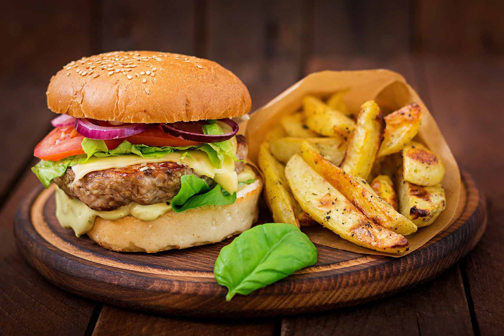

La hamburguesa de res es un clásico indiscutible en el mundo de la comida rápida. Esta receta te trae el sabor auténtico de una hamburguesa jugosa y llena de sabor, perfecta para una comida casual o una reunión con amigos.
Ingredientes
- 1 kilo de carne molida de res
- Sal y pimienta al gusto
- 4 rebanadas de queso derretible (opcional)
- 4 panes para hamburguesa
- Mostaza al gusto
- Salsa cátsup al gusto
- 1 jitomate, rebanado
- 1/2 cebolla morada, rebanada
- 4 hojas de lechuga
Instrucciones
- Divide la carne en cuatro porciones iguales y forma las hamburguesas. Para que queden más jugosas, evita compactar la carne. Salpimienta ambos lados.
- Calienta un comal de hierro fundido a fuego medio-alto. Coloca las hamburguesas en el comal caliente y cocina durante 3 minutos por lado para un término medio rojo, 4 minutos por lado para un término medio y 5 o 6 minutos por lado para un término bien cocido.
- Si vas a utilizar queso, coloca una rebanada sobre cada hamburguesa durante el último minuto de cocción.
- Retira las hamburguesas del comal. Unta mostaza y salsa cátsup en la mitad inferior del pan y coloca la carne encima. Agrega lechuga, jitomate y cebolla, y cubre con la otra mitad del pan. Sirve inmediatamente.